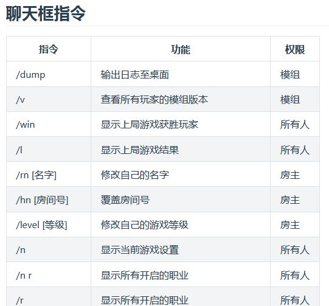

#####进阶教程#####

职业技能优先级【同TOHE】
可能会有不少人对于TOHEX判定职业技能冲突时会发生什么有疑问。而正好，TOHEX从221版本开始重写了击杀玩家的代码逻辑，使得击杀与被杀分为两个独立的事件。
比如，呪狼击杀老兵时究竟是谁死，答案是老兵反杀呪狼，呪狼的技能不会触发。绝大部分TOHE的职业的技能不会连锁效应，除非是特别设计过。所以当呪狼击杀老兵时触发了老兵的技能，则老兵反杀呪狼。以上，呪狼击杀老兵视为 击杀事件，老兵反杀呪狼视为 被杀事件，至此两事件已经达成并判定完成，击杀事件 与 被杀事件 最多只能各存在一次，因此不会继续触发一个新的 被杀事件 以触发呪狼反杀老兵。
再比如，处刑人的目标是小丑，若小丑被票出视为谁的胜利？根据原本程序的判定由于小丑比处刑人更早出现在模组，因此小丑的胜利判定更优先。但我们在职业介绍中特别注明了 小丑、处刑人、冤罪师可以共享胜利，所以答案是一起获胜。也就是说，除了特别说明的职业，一般技能发动优先是根据职业更新顺序的。
根据上一条，吸血鬼吸血鹈鹕，然后鹈鹕吞下吸血鬼，若此时开启会议，鹈鹕和吸血鬼谁死？因为吸血鬼很早就有了，而鹈鹕是后来新增的职业，因此吸血鬼的判定优先于鹈鹕，所以答案是鹈鹕死。此外，若这个会议是鹈鹕召开的则会议不会召开，因为鹈鹕此时已经死亡。那么如果没有开会鹈鹕还会因为吸血鬼吸血而死吗？其实所有延迟类技能都是另外一个事件，并不与其它事件冲突，所以最后鹈鹕会因吸血而死，吸血鬼也会得到拯救。
顺带说个有趣的，时间操控者已经完成了3个任务，会议时间增加了45秒。若此时时间操控者叛变，那么会议时间不会增加而是减少45秒。因为他的技能判定是在会议时间计算时统一判断的而不是累计的。值得一提的是，很多类似累计类型的职业技能都是统一在需要时判断而不是一次次累加并记录。这样可以减少计算量也不需要对变量进行繁琐的操作。例如集票者的票数是在投票时统一计算在场有多少玩家是被集票者击杀，而不是集票者每次击杀都会储存一次票数。宝箱怪也是同理。